What the NbS Tool is
The NbS Tool is a free, web-based platform for planning Nature-based Solutions projects in Southeast Asia. You give it a boundary on a map. It tells you what is already there, what is happening to it, what kind of Nature-based Solution the land can take, and what that could deliver for nature, people and climate.
What it does
For any area you draw or upload, the tool returns what is already there across nature, climate and people, the threats each ecosystem faces, the intervention pathway that fits, an estimate of the benefit that pathway could deliver, a monitoring plan, and documents you can put in front of a funder.
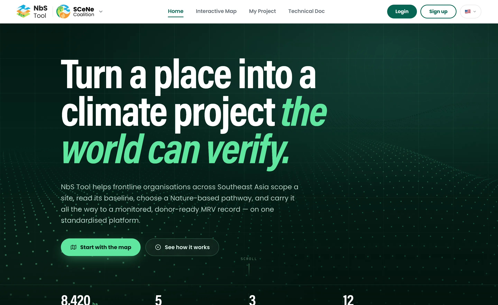
Who it is for
The tool serves two audiences, and answers a different question for each.
| Audience | What the tool gives them |
|---|---|
| Project developers, especially frontline organisations | A pre-feasibility assessment: an overview of existing conditions at the project location, plus a first look at the potential benefits for nature, people and climate of a proposed pathway. Frontline organisations often have limited capacity to carry out spatial assessments of their own. |
| Investors | Insight into the potential costs and revenue of a planned project, so that projects likely to deliver the best combined benefits can be compared and selected with confidence. |
No GIS software or spatial-analysis background is needed. Everything runs in a browser.
What it supports
- Site identification and prioritisation
- Feasibility assessments
- Project design and planning
- Baseline development
- Financing and investment-readiness assessments
- Monitoring framework development
- Evidence-based decisions throughout the project lifecycle
What sets it apart
- Built for the region. It uses country-specific map and socio-economic layers aligned with national data standards across ASEAN Member States, rather than global datasets alone.
- Nature, climate and people in one place. Baseline-versus-benefit analysis, biodiversity values, carbon stocks and community context sit on one platform, so you assess the three benefits together rather than in isolation.
- Open access, low barrier. It is free. A registered account analyses up to 500,000 hectares, generates documents, and can bring in local and traditional knowledge.
- A pathway to action, not just a report. It generates project documentation, including templates aligned with recognised carbon standards, and connects to the Coalition's NbS Incubator and Portfolio.
Who is behind the NbS Tool
The NbS Tool is built by the SCeNe Coalition, with technical experts from across the region and funding from the ASEAN–UK Green Transition Fund.
The SCeNe Coalition
The Southeast Asia Climate and Nature-based Solutions (SCeNe) Coalition is a collaboration between leading non-governmental organisations with an established presence in Southeast Asia. Its purpose is to speed up and increase the implementation of, and investment in, high-quality, high-integrity Nature-based Solutions that deliver for climate, nature and people across the region.
Southeast Asia faces unprecedented demand for carbon credits, and with it an opportunity to direct climate finance towards projects that deliver not only climate outcomes but outcomes for biodiversity and for people as well.
The Coalition's four aims
- Show what quality Nature-based Solutions for climate look like in Southeast Asia.
- Direct carbon finance and other climate finance towards just and equitable climate mitigation and adaptation, and the conservation of biodiversity and critical habitat in Southeast Asia.
- Speed up and scale up high-integrity demand for, and supply of, Nature-based Solutions for climate in Southeast Asia.
- Make sure that growth genuinely delivers positive impacts for climate, nature and equitable benefits for local people: the triple benefits.
Members and partners
| Group | Organisations |
|---|---|
| Coalition members | BirdLife International · Conservation International · Mandai Nature · RECOFTC · The Nature Conservancy · Wildlife Conservation Society · Worldwide Fund for Nature Singapore (WWF Singapore) · Yayasan Institut Sumber Daya Dunia (World Resources Institute) Indonesia · Zoological Society of London (ZSL) |
| Technical experts | Asian Disaster Preparedness Center (ADPC) · Nanyang Technological University (NTU) · Spatial Informatics Group–Natural Assets Laboratory (SIG-NAL), together with Nature-based Solutions, mapping, biodiversity and financing experts from across Southeast Asia |
| Funder | ASEAN–UK Green Transition Fund |
| Consultation | The ASEAN Secretariat and ASEAN Member States |
Three Coalition resources
The tool is one of three complementary resources:
- High-Integrity NbS Criteria. A framework for what a high-integrity project looks like: robust science, meaningful community participation, equitable governance, sustainable financing and long-term stewardship.
- NbS Tool. This platform: the evidence and decision support.
- NbS Incubator. Technical assistance, capacity building and project-development support for selected initiatives, and the route from a promising site towards investment readiness.
Standards it aligns with
The Coalition's capacity-building curriculum, developed under the ASEAN–UK Green Transition Fund, uses the tool throughout its feasibility and monitoring modules. Both the curriculum and the tool are designed to align with the IUCN Global Standard for Nature-based Solutions and with the ASEAN Guidelines and Toolkit on Nature-based Solutions and Ecosystem-based Approaches in the forestry sector.
How the NbS Tool works
Every analysis follows the same eight phases. Phase 0 is optional. Phases 1 to 5 run in the Data Analyser, the panel over the map, and are where the calculation happens. Phases 6 and 7 turn the analysis into a monitoring plan and a document. After that, the project lives in My Project.
The eight phases
- Explore the map. Optional. Switch layers on and off, read the legend, find a place, export a map.
- Select location. Draw a polygon or upload a boundary file, then confirm the area.
- Site characterisation. What is here: general context, nature, people and climate.
- Threat profile. What is happening to it: the pressures on each ecosystem.
- Pathway selection. What the land can take: an ecosystem, a pathway to protect, manage or restore it, and the activities for that combination.
- Potential benefit. What the project could deliver for nature, climate and people.
- Monitoring planning. Activities become indicators, methods and a schedule.
- Generate documents. General project documentation, or a carbon project document aligned with a chosen standard.
After the analysis: manage your projects, then record and verify what happens in the field.
How phases 1 to 5 feed each other
Each phase feeds the next, so nothing can be produced without the phases before it.
- Phase 4 produces two things. The pathway (what the land can take) and the activity list (what you will do). The logic behind them is different, so they are chosen separately.
- One loop back. The threat profile is read again at the benefit stage, to decide which climate-hazard and species benefits can be put into numbers.
- Each phase keeps its own result. A phase can be run again without running the ones before it, and a saved result keeps the choices it was produced with, including the project duration.
Calculated, reported or described
Three kinds of output appear on the analysis screens, and it matters which is which.
| Kind of output | How it is produced | Example |
|---|---|---|
| Calculated | Worked out inside the tool from the site area and published rates | Projected forest loss, avoided emissions, carbon removals, habitat loss avoided |
| Reported | Read from a named map layer and summarised for your area | Land cover shares, population, vulnerability class, soil group |
| Described | Attached to a chosen activity, with no number, because no reliable spatial method exists yet | Watershed function, cultural heritage, benefit sharing |
Where the tool fits in a project
The tool helps at specific points along a project. It does not cover community engagement, consent, governance or financing strategy itself. It gives those steps the evidence they need.
| Project stage | What you need | Where the tool helps |
|---|---|---|
| Understanding the place | A first read of the landscape: land cover, ecosystems, pressures, who lives there | Phase 0 · Phase 2 |
| Technical feasibility | Ecological, social, climate and carbon baselines, and the data gaps to fill in the field | Phase 2 · Phase 3 |
| Defining activities | Interventions that suit each ecosystem, with monitoring built in from the start | Phase 4 · Phase 6 |
| Financing and investment readiness | Structured evidence in the form funders and standards ask for | Phase 5 · Phase 7 |
| Implementation and monitoring | A baseline to monitor against, field records, and a verification trail | Manage your projects · Record and verify |
Finding your way around
Every screen carries the same bar at the top and the same footer at the bottom. Learn these two and you can always find your way back.
The top bar
- The logos, far left. Back to the home page. The small arrow beside them lists the Coalition's other tools.
- The main links, centre. Home, Interactive Map, My Project and Methodology. The one you are on is underlined.
- Your profile, right. Shortcuts to My Projects, the Document Generator, Account settings, this Help Centre, and Log out.
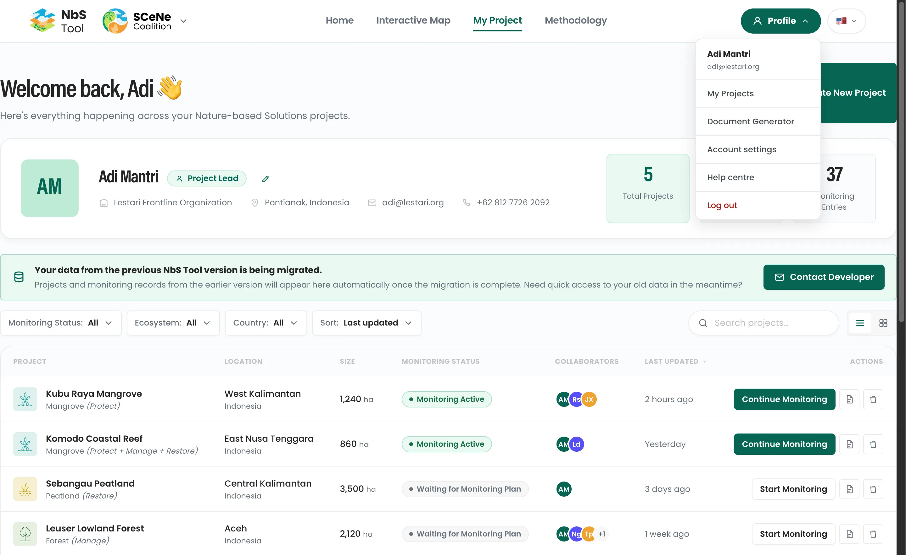
On a phone or tablet
The links fold into a menu button. The map and the analysis need a larger screen, and a note says so. Reading pages, such as this Help Centre and the Methodology, work on any device.
Accounts, area limits and privacy
You can explore and analyse without an account. An account lets you analyse larger areas, keep your work, and share it on your terms.
Area limits
- Without an account you can analyse areas up to 200,000 hectares.
- With a free account you can analyse up to 500,000 hectares.
- Need more? Request broader analysis capability by emailing support@nbstool.org with your organisation and the area you want to analyse.
What an account unlocks
Saving and managing projects, inviting collaborators, uploading your own data, generating and downloading documents, and the larger area allowance.
Account settings
Three parts, each saved on its own: your personal details (photo, name, job title, phone, a short bio), your password, and your organisation's details. Changing your name does not require re-entering your password.
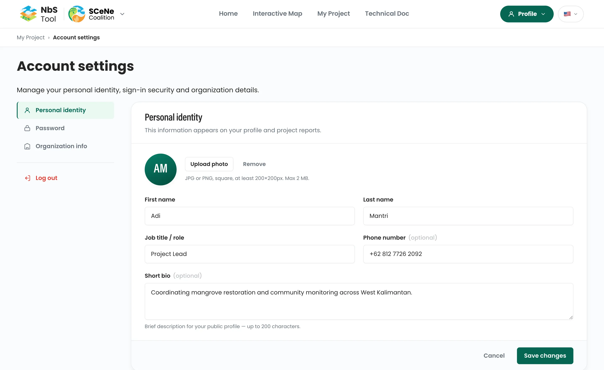
Project privacy
Every saved project has a privacy level you can change in its Privacy tab:
- Level 1 · Private. Only you and invited collaborators can view the project. It is left out of the public NbS Portfolio.
- Level 2 · Coalition. Visible to verified SCeNe Coalition members and the NbS Incubator, for review and funding matchmaking.
- Level 3 · Public. Listed in the public NbS Portfolio as a high-quality example. Baseline summaries are visible to anyone.
- Never shared, at any level. Personal contact details, financial data, and GPS coordinates finer than one hectare.
Data you upload stays confidential unless you authorise sharing, and carries the same protections as a Level 1 project.
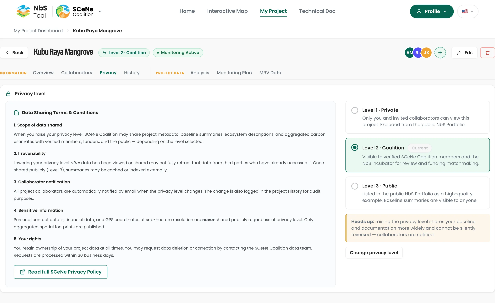
Your first analysis
From a place on the map to a first result, in seven steps. No account is needed for an area under 200,000 hectares.
Seven steps
- Open the Interactive Map. Use the search box to find your district or province, or zoom to the area by hand.
- Mark your area. Draw a polygon on the map, or upload a boundary file. See Phase 1.
- Confirm the area. Check the hectares shown. If the area is over your limit, the confirmation step stops and tells you why. Shrink the boundary or sign in.
- Read the baseline. Work through site characterisation and the threat profile. Each figure has an information button that names its data source.
- Choose a pathway. Pick the ecosystem, the pathway and the activities. Set the project duration, and switch on the carbon-project option if that is your intent.
- Read the potential benefit. Nature, climate and people. Put into numbers where the method allows, described where it does not.
- Save it. Sign in and save the analysis as a project so your team can return to it, plan monitoring and generate documents.
Where you start, and where you confirm
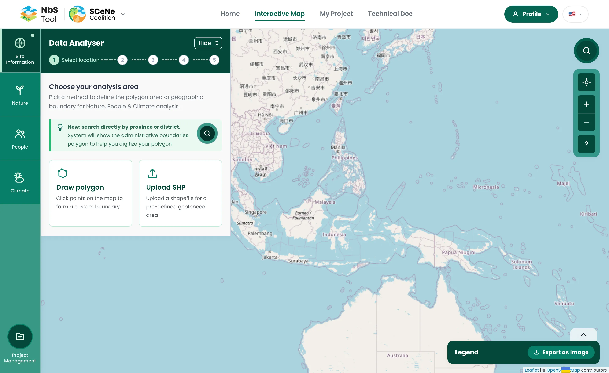
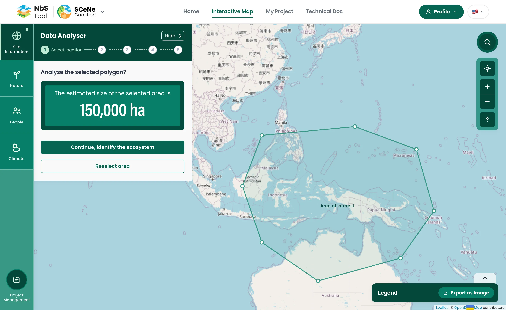
Preparing a boundary file
If you already have a boundary from a GIS, a survey or a community map, upload it instead of drawing.
What the file needs
- Accepted formats. A .zip holding the shapefile set (.shp, .shx, .dbf, .prj), or a .kml or .kmz file.
- Zip the whole set. A shapefile is several files. Put all of them in one .zip; a lone .shp cannot be read.
- Include the .prj. It tells the tool which coordinate system your boundary uses, so it can be placed correctly and its area measured.
- One site per file. Keep a single project boundary per upload. Analyse separate sites as separate projects.
- Stay inside the region and the limit. The boundary must fall within Southeast Asia and under your hectare allowance. The uploader tells you if either check fails.
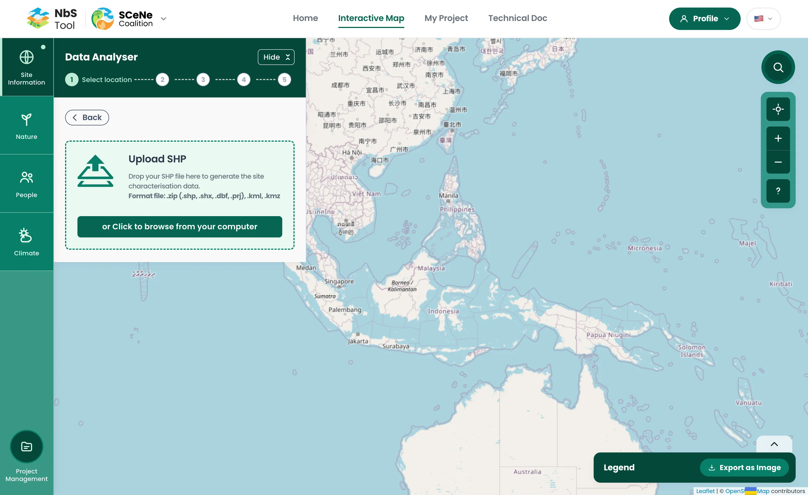
Explore the map
Look around before you analyse anything. Skip this phase if you already know your area.
Layers and legend
- Open a layer group. The map layers sit in the rail on the left, grouped by theme: site information, nature, people and climate. A small dot marks a group that has a layer switched on.
- Switch layers on and off. Several layers can be on at once, which is how you compare carbon stocks with settlements, or deforestation risk with Key Biodiversity Areas.
- Read the legend. Bottom right. Expand it to see the key for every layer that is on. Your boundary and the area actually analysed are always listed. The information button beside an entry opens its source and caveats.
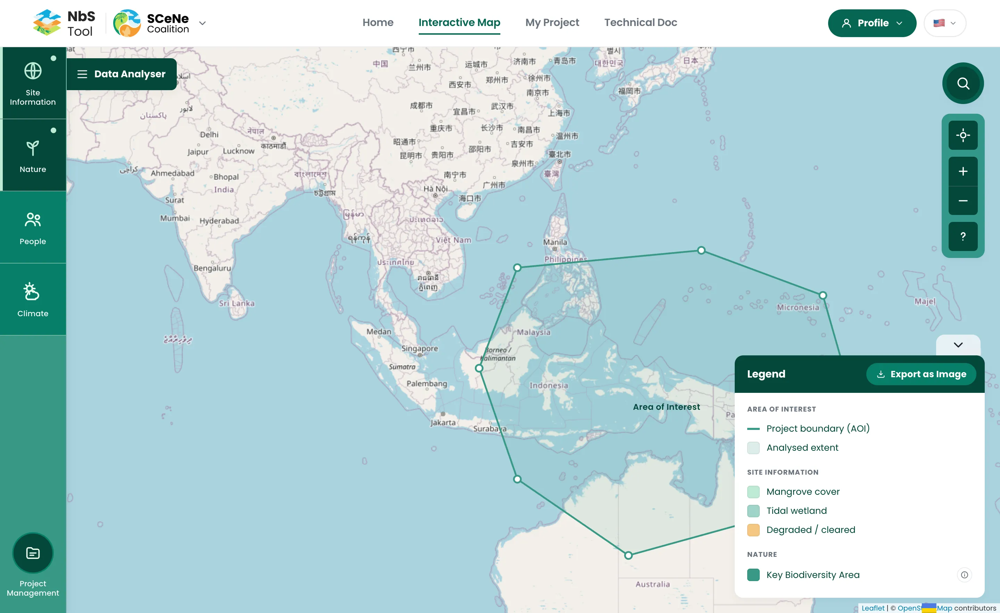
Find a place
Use the search box at the top right to go to a district or province by name. Zoom in and out with the map controls or your mouse, or jump to your current location.
Export a map or data
Take what you see into a meeting, a report or your own GIS, in three forms:
- GeoPDF. A map of the layers you have switched on and your project boundary that keeps its location information. It works offline and in presentations, and opens in GIS software.
- Tabular data. The figures behind the layers, as a spreadsheet, for statistics, planning tools, or comparing several sites.
- GIS files. The spatial data itself, including the shapefile, for QGIS, ArcGIS and other mapping software.
Select location
Tell the tool which piece of ground you are asking about. There are two ways in. Pick the one that matches what you already have.
Draw a polygon
For an area that does not match a boundary you already hold: a concession, a community forest, a restoration site.
- Choose Draw polygon. Then click anywhere on the map to place your first corner.
- Add corners. Each click adds one. Follow the boundary of your site.
- Close the shape. Double-click to finish, or click your first corner again.
- Adjust it. Drag any corner to move it. Click on a line between two corners to add a new one there.
- Click Finish drawing to go on to the confirmation step. Cancel abandons the shape.
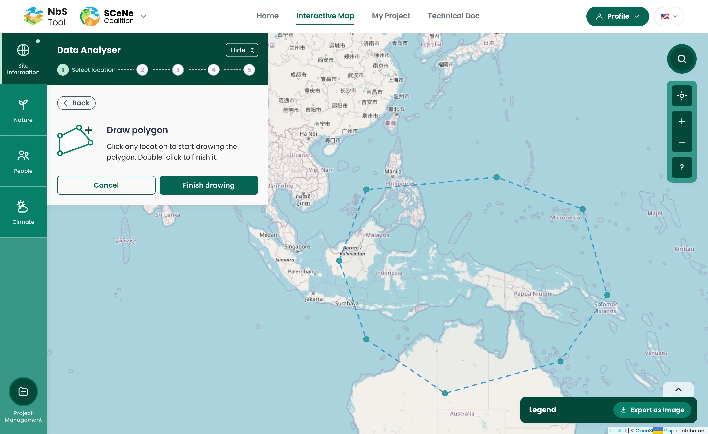
Upload a boundary file
For a boundary that already exists in your GIS.
- Prepare the file. A .zip of the shapefile set, or a .kml or .kmz. See preparing a boundary file.
- Choose Upload SHP. Drag the file onto the drop zone, or browse for it.
- Wait for the check. The tool checks the file's format, its size against your allowance, and that it lies within Southeast Asia. A failed check names the problem.
Confirm the area
However you defined it, the tool shows the size it measured and asks you to confirm before it runs anything. If the number is not what you expected, your boundary is wrong, and this is the cheapest place to fix it. Continue runs the analysis; Reselect area takes you back.
Site characterisation
The baseline: what is in your area today, across four tabs. The tabs follow the same four themes as the map's layer rail, so what you read here matches what you can draw on the map.
General
Which ecosystems are present and how much of each, administrative and zoning status, terrain, historical deforestation, deforestation risk, land cover and natural disaster risk.
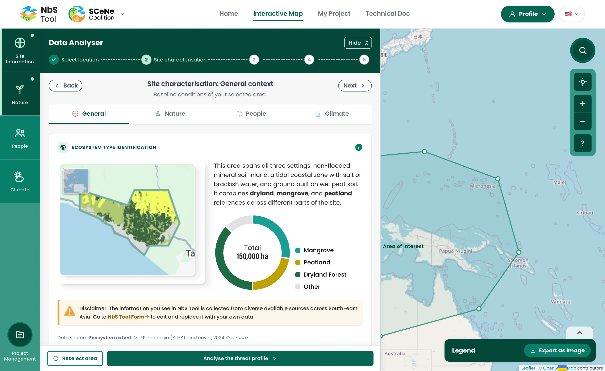
Nature, People and Climate
Habitat, connectivity and species; population, livelihoods and vulnerability; carbon, rainfall, temperature and fire. What each analysis shows lists every item.
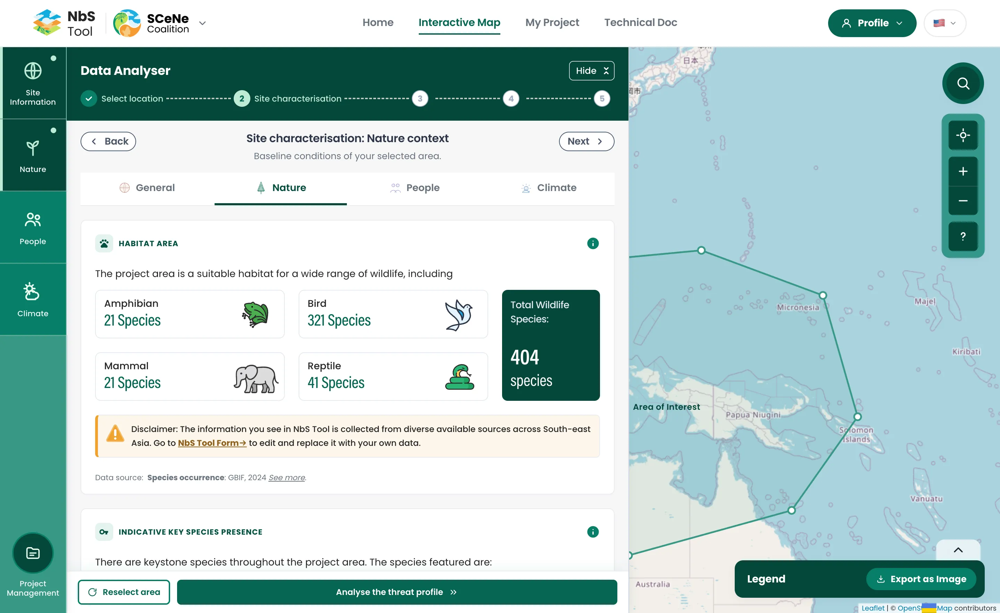
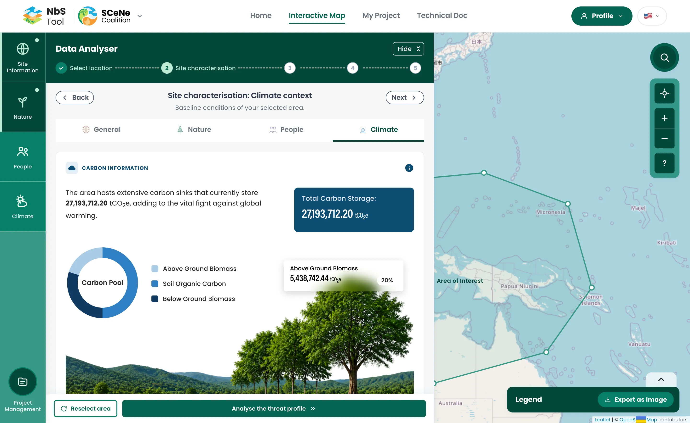
Check where a number comes from
Every card has an information button in its top-right corner. It opens the date, a description, the disclaimer, the resolution and the source of the layer behind that figure. Read it before you quote the figure: a 30-metre layer cannot tell you about a two-hectare patch, and a "historical" date describes the past, not today.
Anything surprising, coarse or missing is a candidate for ground-truthing, community mapping or a survey.
Threat profile
What is going wrong, and where. The tool separates each ecosystem into what is intact and what is disturbed, then shows the pressures behind the disturbance.
Reading the threat profile
- Read the summary. The All Ecosystem tab gives the total ecosystem area and how much of it is disturbed, as a number and a share.
- Compare the ecosystems. Dryland forest, mangrove and peatland sit side by side, so you can see which is under most pressure. Each has its own tab for detail.
- Find where it is happening. The disturbance map shows where inside your boundary the pressure is: remaining, disturbed, forest loss or forest gain.
- Read the drivers. Below the map, the main pressures behind the disturbance are named, not just measured.
Pathway selection
The decision phase. The activities you choose here travel furthest: they become the indicators in your monitoring plan.
Ecosystem and pathway
- Pick the ecosystem. One block per ecosystem the analysis found in your area: forest, mangrove or peatland.
- Pick the pathway. Protect, Manage or Restore. Each card shows the area it applies to and what share of that ecosystem is eligible. A pathway the land cannot take is greyed out and marked, not hidden.
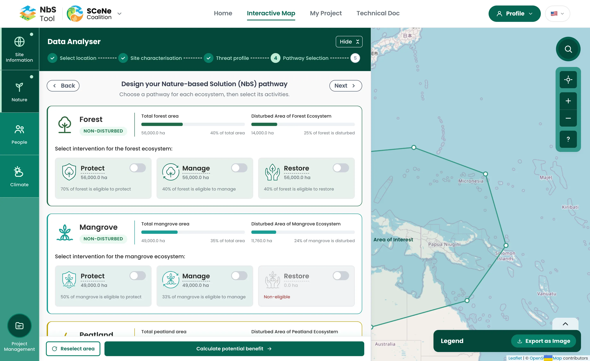
Activities
Switching a pathway on reveals the activities for that ecosystem and pathway. A counter tracks how many you have chosen.
The full logic, from land cover through to indicators, is drawn in the activity matrix.
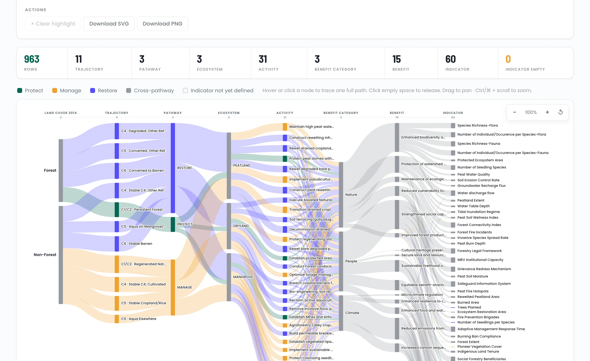
Duration and carbon
- Duration. Between 10 and 70 years, 30 by default. Benefits add up over this period, so a longer project shows a larger total.
- The carbon-project option. If the project will seek carbon finance, switch it on. The benefit phase then shows net figures, after three deductions you can edit: uncertainty (error in the data and models), leakage (emissions simply moved elsewhere) and buffer (a reserve held back in case the gains are reversed). See carbon finance.
Potential benefit
What your chosen pathway could deliver over the project duration, compared with the baseline. A strip at the top repeats the choices that produced everything below it.
Nature, climate and people
- Nature. Ecological connectivity, watershed function, biodiversity and ecosystem function, vulnerability to fire, pests and disease, and forest productivity and regeneration.
- Climate. Reduced emissions from deforestation and degradation, increased carbon sequestration and storage, net emission reductions and removals, resilience to climate hazards, and microclimate regulation. Avoided emissions and new carbon are shown separately before they are combined.
- People. Food and water security, sustainable livelihoods, social capital and governance capacity, equitable benefit sharing, secure land and resource tenure, and cultural heritage. These are described rather than numbered, because they depend on how the project is designed and run, not on the map alone.
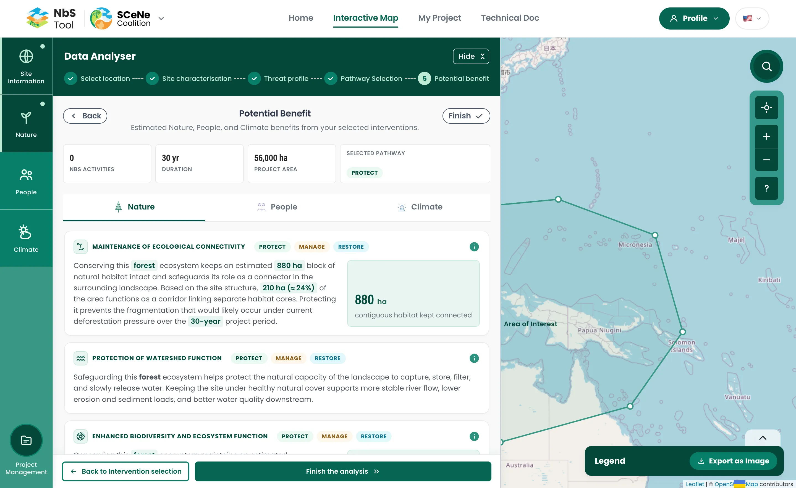
Reading a benefit card
- Read the card. It names the benefit, explains the reasoning in a sentence, and puts any figure in a box. A note underneath names the activities or published rates the estimate rests on.
- Check the pathway tags. Protect, Manage and Restore tags show which pathways deliver the benefit. A grey tag means you did not choose that pathway.
- Finish the analysis. The button at the foot carries the result into a new project, or onto an existing one.
Monitoring planning
A plan turns an intention into something that can be checked. You choose the activities; the tool proposes the indicators, methods and frequencies that go with them.
Define the activities
Filter by ecosystem and pathway, then tick what the project will actually do.
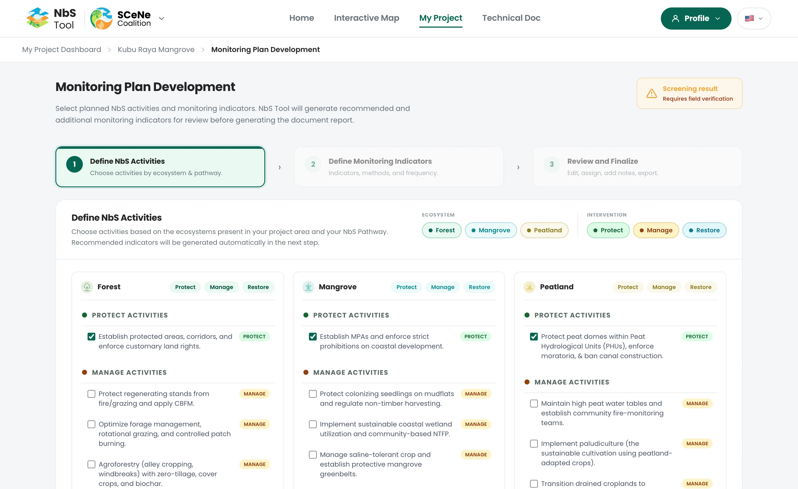
Review the recommended indicators
Each activity implies the indicators that can show whether it is working. Keep, drop or add indicators, and confirm how and how often each will be measured.
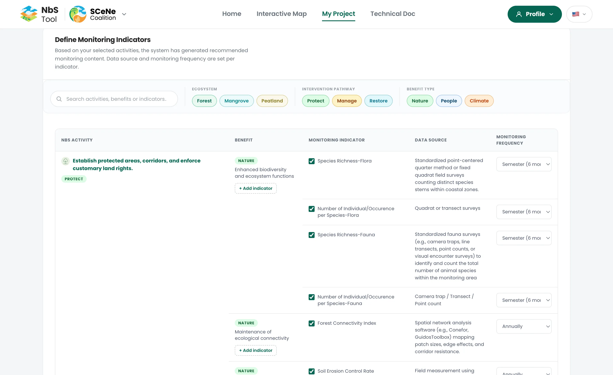
Review and finalise
Set the duration for each ecosystem, check the plan summary, and generate the plan. It is attached to the project and becomes the structure for field records.
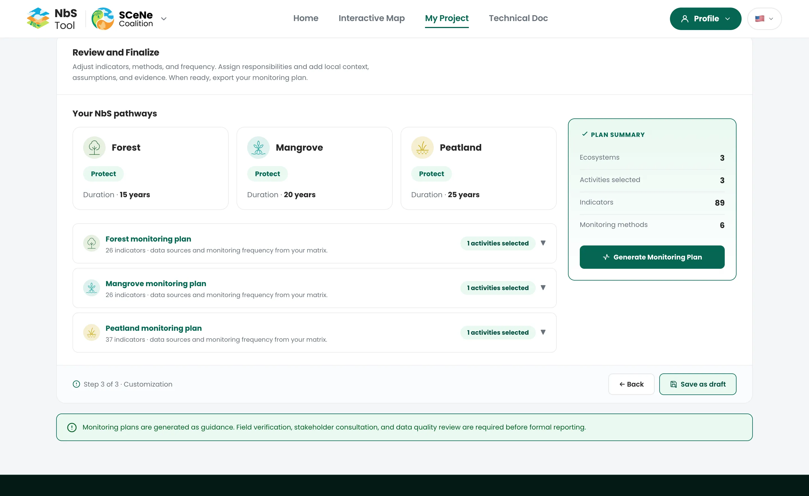
Generate documents
Funders and standards ask for particular documents in particular shapes. Both document types draw on the analysis you have already run, so the baseline sections are filled in for you and you complete the parts only you know.
Two document types
- General Project Documentation. Site information with maps, ecological baseline statistics, biodiversity values such as overlap with Key Biodiversity Areas, climate and carbon baselines, a socio-economic profile, and an assessment of the project's potential for nature, climate and people. The right starting point for a feasibility study or a funding concept.
- Carbon Project Documentation. Choose a target standard: Verra, Gold Standard or Plan Vivo. The document follows that standard's structure, with baseline scenarios, monitoring templates, permanence and leakage risk frameworks, spaces for the inputs only your project can supply, and an outline monitoring, reporting and verification plan.
Filling one in
- Choose the document type and, for a carbon document, the standard.
- Work through the sections. Each section shows how many of its questions are answered, and you can move between them in any order. Fields filled from the analysis are marked. Answer the rest in plain language.
- Review and download. Save the result as PDF or Word. Check the text against what you know of the site before it goes anywhere.
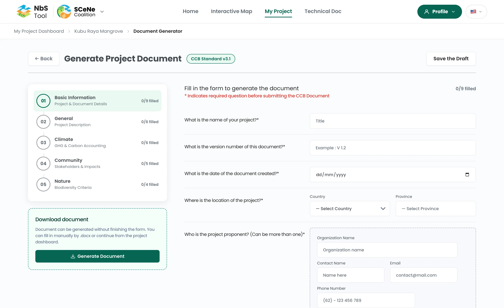
Manage your projects
An analysis becomes useful when it becomes a project: something with a name, a team, a history and a monitoring record.
Save and find your projects
- Sign in and save the analysis. Saving needs a free account. The project appears in My Project.
- Find it again. My Project shows your totals at the top, then every project you can reach. Filter by monitoring status, ecosystem or country, search by name, and switch between a table and cards.
- See what each project needs next. The monitoring status reads Monitoring Active or Waiting for Monitoring Plan, and the main button changes to match.
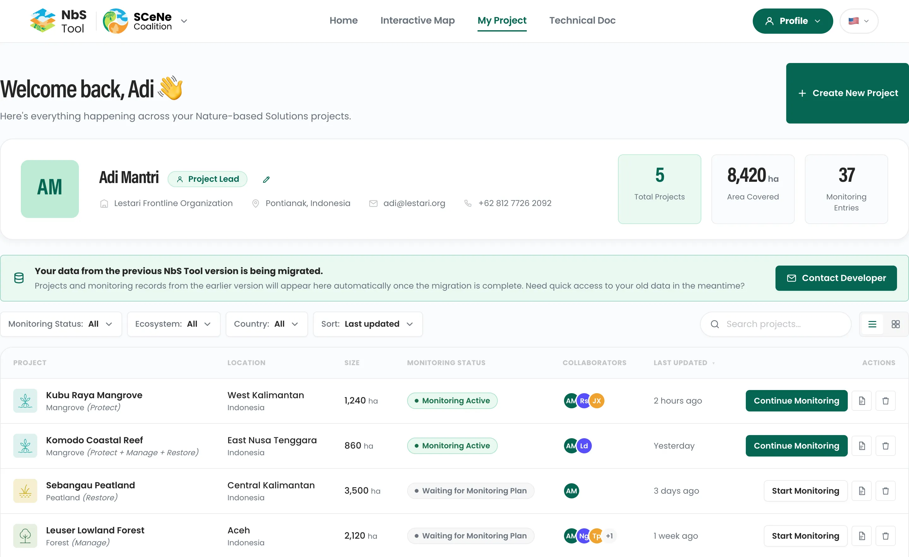
Inside one project
Opening a project gives you seven tabs in two groups.
- Overview. The boundary on a map, the project details, the documents it has produced, and the intervention it is running.
- Collaborators. Add colleagues by email so they can view and work on the project, and set their role.
- Privacy. Private, Coalition or Public. See accounts, area limits and privacy.
- History. A record of every edit, including privacy changes.
- Analysis. The same site characterisation, threat profile and potential benefit, kept with the project.
- Monitoring Plan and MRV Data. The plan's status and indicators, and two ways forward: read the monitoring dashboard, or log a new entry.
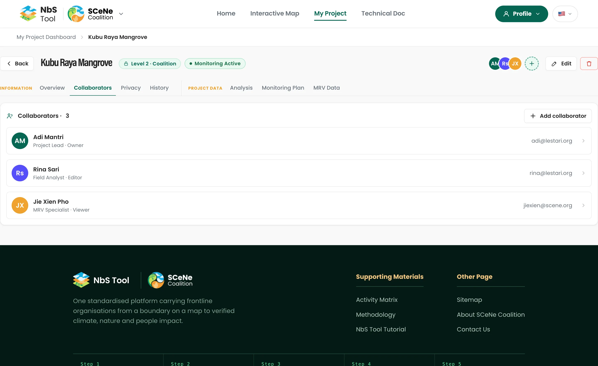
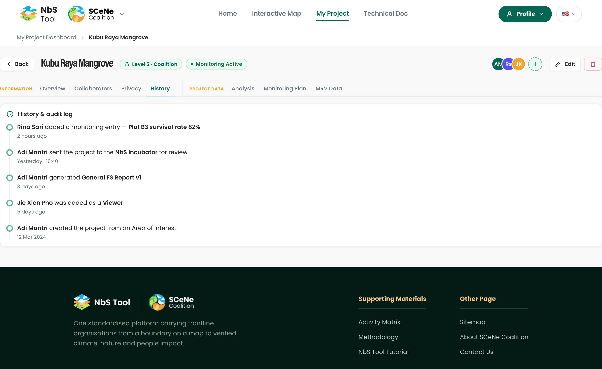
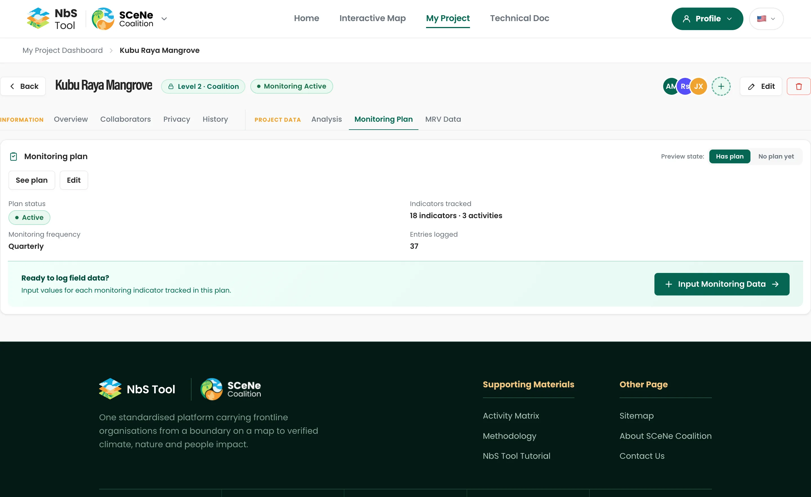
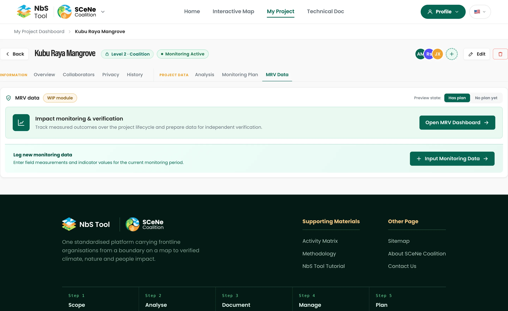
Import a project that is already running
If a project is already under way, bring it in so the tool can describe the site and build a monitoring plan around activities that are already happening. From My Project, choose Create a new project, then Upload an existing project.
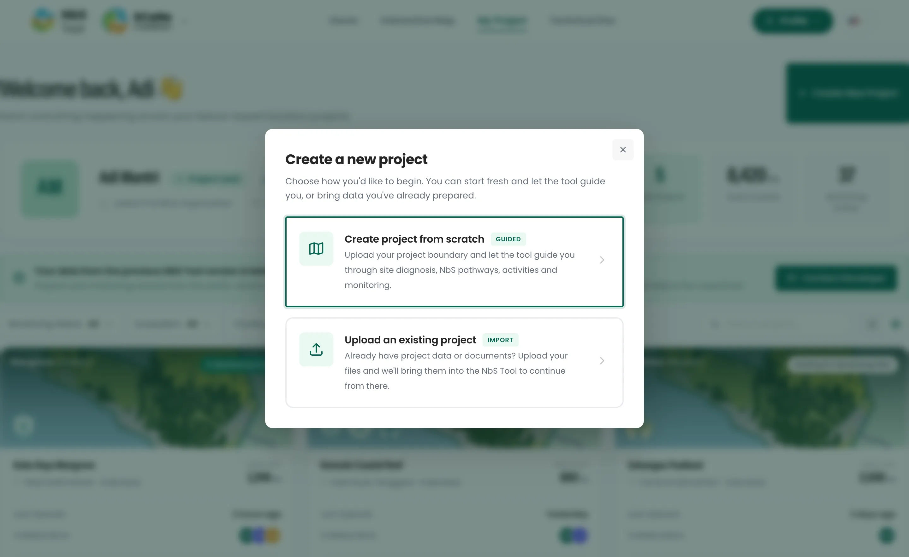
- Upload the boundary. The same formats as any boundary. The tool reports what it found (area, ecosystems, disturbance) before you continue. A wrong format, an area over the limit, or a boundary outside Southeast Asia is refused with the reason.
- Select the pathway and the activities the project already carries out.
- Review the generated monitoring table. One row per activity: its benefit, its indicators, the data source and how often it is measured. Untick any indicator, or add your own.
- Customise and finalise. Adjust data sources and frequency, assign who is responsible, add notes, and generate the plan.
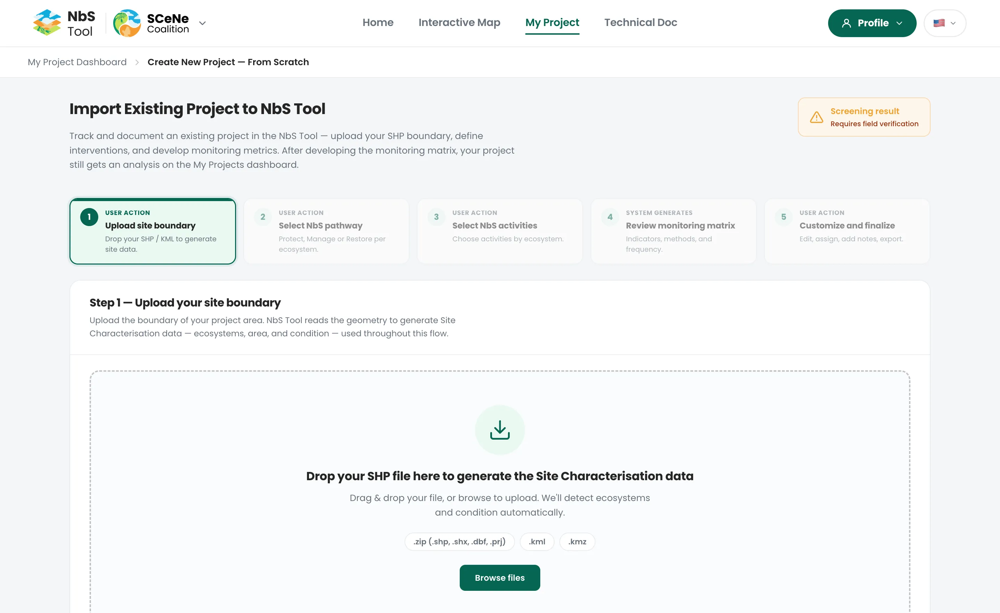
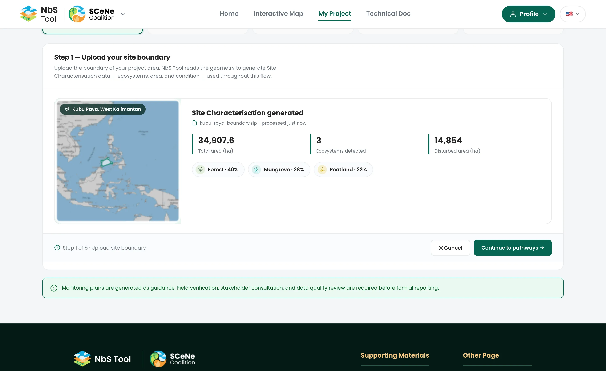
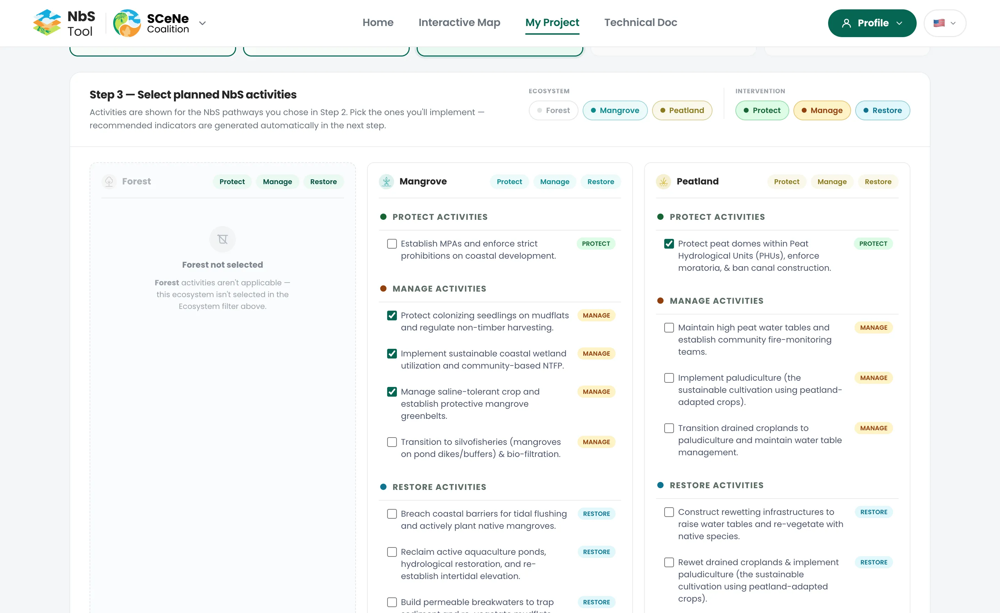
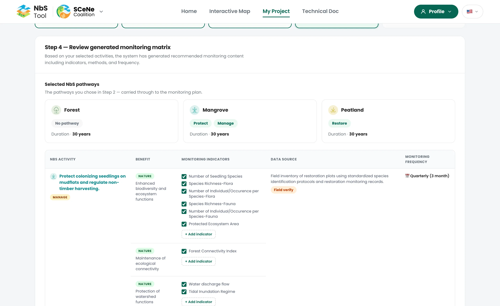
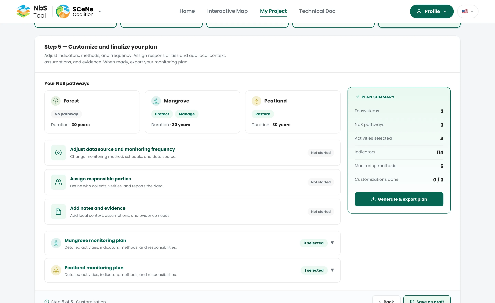
Record and verify
A plan predicts; monitoring records. One screen is for entering field observations against the plan's indicators, the other for seeing whether the project is on track.
Enter field data
- Open the field form and pick the reporting period. Everything you enter is filed against it. The indicators come from the monitoring plan, grouped by ecosystem, each with its target, method and frequency.
- Enter measurements and evidence. Record the value, unit, date and data source, and attach photos or files as evidence. Add a note where it helps.
- Submit. You can submit what you have and finish later. The left column shows how much of the period is recorded.
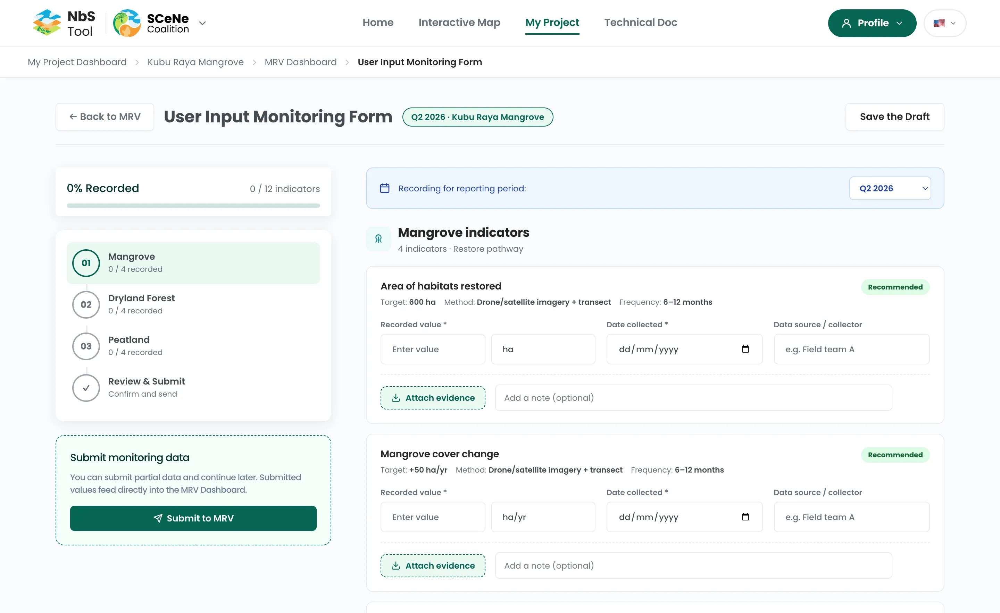
Track progress
- Progress to target. For every indicator, the latest value against its target, as a bar and a percentage.
- Status. On track, or Update due when an indicator has gone too long without a reading.
- Reporting progress. How much of this period's data is in, and how much is still missing.
- Activity log. Who recorded what, and when. This is the record a verifier will ask for. Export a report when you need to show progress.
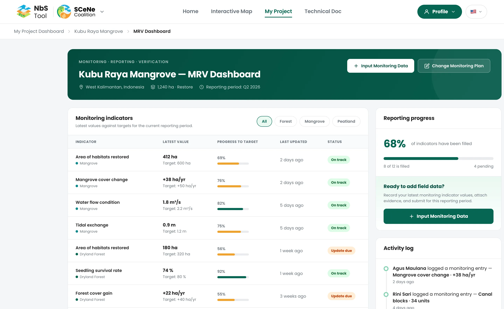
Add your own data
Organisations with an account can upload their own spatial data to sit alongside the tool's layers: field surveys, community maps, culturally significant areas or traditional-use zones, and recent monitoring data. This is how local and traditional knowledge enters the analysis. Uploads stay confidential unless you authorise sharing, and they add to the analysis without changing the method behind the standard figures.
What each analysis shows
For a defined area, the tool reports the following, grouped as it appears on screen.
Every item, by analysis
| Analysis | What it reports |
|---|---|
| General context | Ecosystem type identification · administration and zoning status · terrain · historical deforestation · deforestation risk · land cover · natural disaster risk |
| Nature context | Habitat area · indicative key species presence · conservation significance · Forest Landscape Integrity Index · Key Biodiversity Areas · endangered tree species |
| Climate context | Carbon information · soil classification · annual precipitation · annual mean temperature · historical burned area |
| People context | Demography: estimated population, age groups, households, vulnerability · employment and underemployment · education: literacy, enrolment, attainment · economy: average household income · health: most common diseases · housing and settlements: water access, sanitation, toilet facilities |
| Threat profile | For each of dryland forest, mangrove and peatland: total disturbed area · disturbance map · disturbance drivers |
| Potential benefit · nature | Maintenance of ecological connectivity · protection of watershed function · enhanced biodiversity and ecosystem function · reduced vulnerability to fire, pests and disease · improved forest productivity and regeneration |
| Potential benefit · climate | Reduced emissions from deforestation and degradation · increased carbon sequestration and storage · net carbon emission reduction · net carbon sequestration · estimated net emission reductions and removals · enhanced resilience to climate hazards · microclimate regulation |
| Potential benefit · people | Enhanced food and water security · sustainable livelihood opportunities · strengthened social capital and governance capacity · equitable benefit-sharing mechanisms · secure land and resource tenure · cultural heritage preservation |
A note on the people figures
The people figures come from gridded and national statistics. They describe the population of the area your boundary covers, not the community that holds rights over the land. Tenure, customary claims and community make-up have to come from your own engagement and surveys.
Where the numbers come from
Every figure is produced from a named map layer by a documented method. There are two places to look.
On the screen
The information button next to each figure names the dataset, its publisher, its resolution, its date and the publisher's own disclaimer.
In the Methodology
Every data layer, grouped by theme, and every constant and formula the tool uses.
What the tool does not do
The tool is strongest as a baseline and decision-support platform. Used well, it gives a consistent starting point for feasibility, design and long-term monitoring. It is not, and does not claim to be, any of the following.
Six limits
- Not a substitute for field data. Its outputs come from satellite and statistical products. Field measurements, carbon inventories and ecological surveys check, refine or correct them. Tool-generated maps are a good way to decide where to survey first.
- Not a substitute for community engagement. It does not replace household surveys, participatory assessments, Free, Prior and Informed Consent processes or consultation. It should be used alongside them.
- Not formal carbon accounting. The carbon figures are early-stage screening. A project seeking validation or credits still needs additionality demonstration, leakage analysis, permanence-risk assessment, measured carbon stocks and the method of its chosen standard. See carbon finance.
- Not continuous monitoring. It establishes a baseline and structures a plan. Ongoing monitoring still needs periodic field surveys, ground checks and updates to the project record.
- Not a replacement for professional review. Outputs are a structured evidence base for discussion, checking and decisions. They are not final conclusions.
- Limited by resolution. A figure is only as detailed as the layer it came from. A 30-metre layer cannot see a feature narrower than about 30 metres, and a coarse layer may cover a small site with a single cell. Check the resolution of each layer before quoting a figure from it.
Carbon finance and standards
Carbon markets are the most developed system for project design, safeguards and monitoring, so the tool uses them as a reference. Nature-based Solutions are not only carbon projects, and many good projects are viable on biodiversity and social benefits alone.
If your project will seek carbon finance
- Which standards matter in Southeast Asia. Verra's Verified Carbon Standard, usually paired with the Climate, Community and Biodiversity Standards; Gold Standard; Plan Vivo; and the emerging Equitable Earth standard. They differ in scale, cost, safeguards and buyer recognition. Choosing one is a design decision, not a box to tick at the end.
- Consent is required. Across these standards, Free, Prior and Informed Consent is required where Indigenous Peoples or local communities may be affected. A documented, maintained consent process is a condition of validation.
- What a Project Design Document is. The official document submitted to a standard for validation, and the main reference for auditors, regulators and buyers. It covers the project description, eligibility, baseline and additionality, carbon modelling and monitoring, community and biodiversity impacts, safeguards, legal and tenure documents, and benefit sharing.
- How far the tool gets you. Feasibility work of the kind the tool supports typically covers up to about half of a Project Design Document: baseline, eligibility, early safeguard assessment. Legal documents, field surveys and updated carbon modelling must still be added before validation.
- What the Document Generator gives you. A Carbon Project Documentation template aligned with Verra, Gold Standard or Plan Vivo, with spaces for the inputs only your project can supply. See Phase 7.
Where carbon appears in the tool
How to cite
Cite the tool and the data separately, because they have different authors.
Tool, data and method
- The tool. Name it, give the version, the date you ran the analysis and the area analysed. For example: SCeNe Coalition. NbS Tool, version 3.0. Analysis of [area name], run on [date].
- The data. Each figure's information button names the dataset and its publisher. Cite the publisher's own reference for any dataset you rely on.
- The method. For formulas and constants, cite the Coalition's methodology documentation as shown in the Methodology.
What's new in v3.0
Version 3.0 rebuilds the interface around how practitioners actually work, shaped by user feedback and research. It launches in December 2026.
New in this release
- Ecosystem identification. The analysis now maps which ecosystems are present in your area.
- Threat profile. A new analysis of the pressures affecting each ecosystem.
- Country-specific social data. Stronger figures across demography, employment, education, economy, health, housing and human settlements.
- Deeper pathway design. Choose an ecosystem, then a pathway, then activities for each combination, with a projected estimate for a carbon project.
- Monitoring plan. A new module that turns activities into recommended indicators, reviewed before the report is produced.
A later release will move the degradation analysis from a ten-year window to an annual or five-year one.
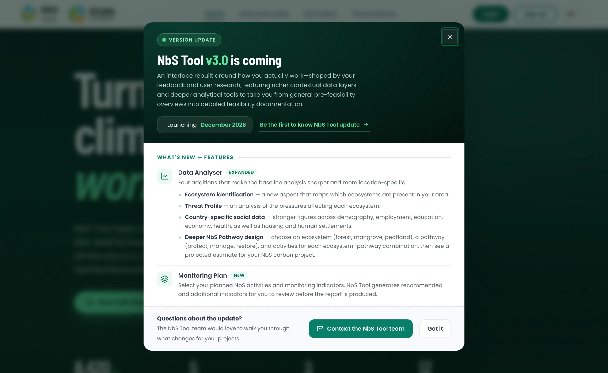
Frequently asked questions
Open a question to read the answer.
Using the tool
Is the NbS Tool free to use?
Yes. Without an account you can explore the map and analyse areas up to 200,000 hectares. A free account raises that to 500,000 hectares and unlocks saving projects, collaborators, uploads and document generation. For larger areas, request broader analysis capability.
Do I need an account?
Not to explore or to run an analysis under 200,000 hectares. You need one to save a project, invite collaborators, upload your own data, generate and download documents, or analyse a larger area.
Which countries and ecosystems does it cover?
Southeast Asia, with country-specific layers for the ASEAN Member States. The analysis covers three ecosystems: dryland forest, mangrove and peatland. The Methodology's region, ecosystems and pathways lists the countries and the ecosystem definitions.
What boundary file can I upload?
A .zip containing the shapefile set (.shp, .shx, .dbf, .prj), or a .kml or .kmz file. The boundary must fall within Southeast Asia and within your hectare allowance. See preparing a boundary file.
Can I add my own field data or community maps?
Yes, with an account. You can upload spatial data from field surveys, community mapping and local monitoring to sit alongside the tool's layers. It stays confidential unless you authorise sharing. See record and verify.
Can I export maps and data?
Yes. A GeoPDF of the map, the figures behind the layers as a spreadsheet, and the spatial data itself in standard GIS formats including the shapefile. See Phase 0.
Who can see my project?
That depends on its privacy level. Level 1 is private to you and your collaborators. Level 2 is visible to verified SCeNe Coalition members and the NbS Incubator. Level 3 lists it in the public NbS Portfolio. See accounts, area limits and privacy.
Can I work on a project with colleagues?
Yes. Open the project and add collaborators by email from the Collaborators tab. See manage your projects.
Where is my data from the previous version of the tool?
Projects and monitoring records from the earlier version are being moved across and will appear in My Project automatically once that is complete. If you need them sooner, email support@nbstool.org.
Is the tool available in other languages?
The interface and this help centre are in English for now.
Does it work on a phone or tablet?
The map and the analysis are designed for a desktop or laptop screen, and a notice says so on small screens. Reading pages, such as this help centre and the Methodology, work on any device.
Results and documents
Are the results good enough to put in a funding proposal?
They are screening-level evidence for a pre-feasibility or feasibility study, not measurements of your site. Check them in the field and with the community before they go to a funder, and check the resolution of each layer you rely on. See what the tool does not do.
Does the tool calculate carbon credits?
No. It estimates potential avoided emissions and removals as an early screen. Issuing credits requires additionality, leakage and permanence analysis, measured carbon stocks and the method of a recognised standard. See carbon finance and standards.
Which document templates are available?
General Project Documentation, and Carbon Project Documentation aligned with Verra, Gold Standard or Plan Vivo. Documents download as PDF or Word. See Phase 7.
Does the tool replace community consultation or consent?
No. It does not conduct, record or stand in for Free, Prior and Informed Consent, household surveys or participatory assessment. Its maps and summaries can support those processes, for example by helping a community see a proposed boundary, but the process itself is yours to run.
How do I cite the tool and its data?
Cite the tool by name, version, date of analysis and area, and cite each dataset by its publisher. See how to cite.
This documentation
What is the difference between Help and Methodology?
Help explains how to use the tool. The Methodology explains how each number is produced: the data layers, the rules and the formulas. Every guide here links to the matching Methodology article, and every Methodology article links back. Use the Help | Methodology switch at the top of the sidebar to move between them. The search box searches both.
How do I report a problem or suggest an improvement?
Email the team. See contact and feedback for what to include so we can reproduce it.
Contact and feedback
Questions about using the tool, your account, your area allowance or your data go to support@nbstool.org.
Get in touch
Ask the team
For questions about using the tool, your account, your area allowance or your data.
Report a bug or give feedback
Tell us which screen you were on, what you did, what you expected, and what happened instead. Your browser and the size of your area help us reproduce it. Screenshots are welcome.
Elsewhere
Looking for how a number was produced? That is the Methodology. Looking for a particular screen? Every page is listed on the sitemap.
The privacy notice and terms of use are being prepared and will be linked from here before launch.